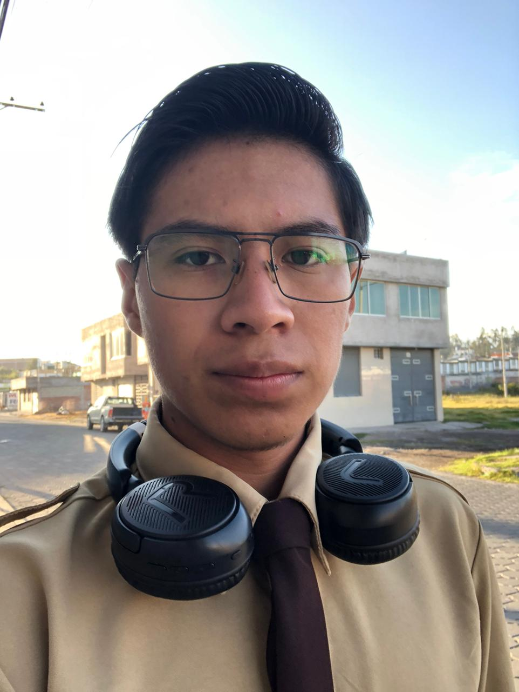

En este espacio compartiré mis pensamientos, experiencias y proyectos relacionados con mis intereses. Aquí encontrarás contenido sobre poesía, fotografía, redes sociales, mis estudios, hobbies y proyectos en los que estoy trabajando. ¡Espero que disfruten explorando mi mundo!
Mi nombre es Anthony me gusta la tecnologia ya sea software o hardware, quiero aprender varios idiomas para poder viajar y mejorar mi mente, me gusta el color café y el azul en mis poemas vas a encontrar mas información sobre porue me gusta el color café, me gusta la fotografía como hobby ya que no es nada profecional pero me gusta tomar fotos de lugares o objetos y dejar plasmado su belleza o los sentimientos del momento, suelo tomar fotos de momentos nomales porque en eso se esconde la alegria del momento no necesariamente necesita ser una foto planeada sino algo espontaneo, que plasme ese momento, me gusta muchos tipos de musicas como clasica o de piano tambien el rock, el pop entre otros mas, me gusta escribir poemas aunque no soy muy bueno pero me gusta escribir sobre mis sentimientos o sobre cosas que me pasan, quiero entrenar el abito de la lectura y mejorar mi salud realizando ejercicios, quiero estudiar la universidad en Rusia y una Maestria en Japon por eso son mis idiomas principales para aprender tambien el aleman y el chino, mis comidas favoritas son la pizza el encebollado, si me encuentro mal en cualquier sentido si me dan algo de comer me siento mejor, mis juegos favoritos son War Thunder, Assetto Corsa, La saga de Metro es la mejor para mi sin comparación y quiero probar cuando salga Metro 2039 me apaciona los graficos lastima que juego por el momento con un i3-6100 aunque me quiero comprar la Lenovo legion 5 seria un buen salto y tambien para la Univesidad, eso seria algo sobre mi para que me conoscan.

En esta sección compartiré mis poemas , así como algunos de mis Poemas favoritos. La poesía es una forma de expresión que me apasiona aunque no soy muy bueno pero vere como mejorar, y aquí podrás encontrar una variedad de estilos y temas.
En esta sección compartiré mis fotografías, y tambien algunas imagenes que me gusten aunque devere tener cuidado con los derechos de autor, es una galeria y la voy a dividir en subpartes para una mejor visualización, por ejemplo una de carros otra de flores y otra de mis momentos felices, etc.
En esta sección dejare algunas de mis redes sociales para que puedan conectarse conmigo y seguir mis actualizaciones, como tambien para auydar a despejar dudas de diferentes temas ya puedan ser sobre el estudio algun consejo o algo por el estilo.
En esta sección compartiré información sobre mis estudios, cursos y aprendizajes. Aquí podrás encontrar recursos, notas y reflexiones sobre los temas que estoy estudiando, tambien tendra una subparte de como es mi estadia en Rusia "Aun no estoy pero proximamente" y tambien mi nuevo canal de Youtube donde subire contenido de mi día a día.
En esta sección compartiré mis hobbies y actividades que me gustan, asi tambien como pequeños viajes o aventuras que he tenido o tendre, contara de dos partes separadas uan para lso hobbies y otra para los viajes.
Aquí compartire algunos proyectos que he relizado y algunas ideas que tenga para desarrollar en el futuro, tambien sobre software que tenmgo y que me podrian ayudar probando para mejorar la experiencia de usuario, y la interfaz ya que yo soy muy malo para del desarrollo grafico no soy muy avil en esa parte.
Hoy he estado trabajando en mi sitio web personal, y completando las diferentes secciones que había planeado, aunque trabajo desde ayer en la tarde porque el principio solo queria una web para los poemas pero ahora como tengo algo de tiempo libre lo voy a construir siempre he querido tener un espacio para compartir mis experiencias y pensamientos, y ahora que tengo la oportunidad de hacerlo, estoy emocionado por ver cómo evoluciona este proyecto. Espero que este sitio web se convierta en un lugar donde pueda conectar con otras personas que compartan mis intereses y pasiones, quiero que mas personas me conoscan y hacer nuevas amistades.